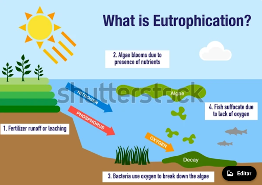
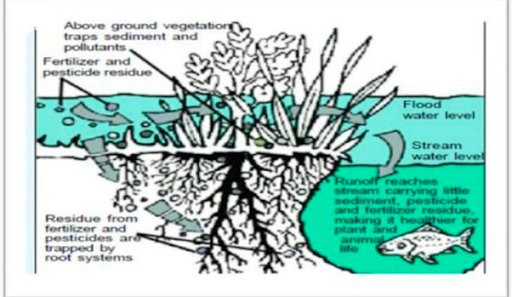

Introduction
Discover the transformative role of Kalmar Dam, an artificial wetland with a sustainable mission. Learn how this innovative solution plays a crucial role in reducing the environmental impact of chemicals used at the Kalmar airport and surrounding farms, and diminish the risk of floods. By creating a new ecosystem for both flora and fauna, Kalmar Dam contributes significantly to keeping the Baltic clean. Delve deeper into the workings of this extraordinary dam and explore its mission to foster sustainability.
The Process
Eutrophication begins with the enrichment of the lake water, leading to increased phytoplankton productivity. This process, known as Algae Blooms, sets off a chain reaction. Bacteria decompose the algae, consuming oxygen and releasing carbon dioxide. The decline in oxygen levels results in the death of aquatic life and plants. As organic material accumulates, the lake's health deteriorates.
Kalmar Dam's Solution
Kalmar Dam plays a pivotal role in preventing the harmful effects of eutrophication. The dam's water flows through five monitored sections equipped with different types of sensors. These sensors, integrated into the Internet of Things (IoT) and connected to the Helium network, provide real-time data for early detection of eutrophication.
Sensor Technology
One key sensor, the conductivity sensor, offers insights into oxygen levels within the dam. By identifying signs of eutrophication early on, researchers can intervene and mitigate the process. The IoT integration ensures seamless communication, allowing for swift responses to maintain wetlands in the dam's ecological balance.
Wetlands and Filtration Plants
In addition to sensor technology, Kalmar Dam employs filtration plants to remove impurities from the water. These plants play a crucial role in maintaining water quality, contributing to the overall sustainability of the lake.
Detail of the istance sensor LDDS75

Image 1 + airport: https://www.istockphoto.com/se/vektor/the-eutrophication-process-gm1364257858-435526731
Description of the project
Learn More about IoT and the Helium Network
Explore the world of the Internet of Things (IoT) and the Helium network, integral components of Kalmar Dam's monitoring and communication system. Gain insights into how these technologies enhance the dam's efficiency and contribute to its sustainable mission.
Helium Network: A Connectivity Breakthrough
Discover how Kalmar Dam stands as a testament to innovation, sustainability, and the harmonious coexistence of recreational activities and nature. Join us in championing a cleaner, healthier Baltic region through the remarkable efforts of Kalmar Dam.
Violin plts
- All values of Temperature (range & distribution)
- All values of Water depth (range & distribution)
Biological context
Harnessing Nature's Power: Biodiversity in Kalmar Dam
Greening the Waters: A Strategic Planting Initiative
Dive into the eco-friendly efforts around Kalmar Dam as numerous plants are strategically placed in and around the dam to enhance water purification. The expansive vegetation, both above and below the water's surface, plays a pivotal role in elevating the efficiency of this natural purification process.
Key Roles of Purification Plants
Discover how these green guardians are actively involved in a series of natural processes aimed at reducing nitrogen and phosphorus content in the dam.
Pollutant Trapping:
- The vegetation in the dam acts as a natural barrier, trapping pollutants and sediments that might otherwise runoff into the watercourse.
Root Power:
- Plant roots contribute to nutrient retention and soil permeability, preventing floods and ensuring a cleaner watercourse.
Biodiversity Boost:>
- The flourishing vegetation attracts a variety of animals, creating a welcoming habitat for fishes, birds, and small mammals.
Nature's Cleanup Crew
Witness the incredible capabilities of these plants as they capture dissolved nitrogen and phosphorus, providing a safe place for diverse species of small animals. This thriving ecosystem promotes the breakdown of organic matter, facilitated by fungi and bacteria.
Birds Flourish in Kalmar Dam
Explore the growing biodiversity around the dam, particularly in the realm of birds. Depending on the season, the wetlands become a safe place for various bird species, with chaffinches and waders gracing the Skärgårdsparken.
Raptors on the Horizon
Marvel in the presence of raptors like tawny harriers, sea eagles, pigeon hawks, red gladiators, and buzzards. Their presence stands as a testament to the improving water quality within the wetland.

Aquatic Symphony: The Fishes of Kalmar Dam
Transformations for Fish Efficiency
Delve into the transformative measures implemented in 2013 to boost efficiency and allow fish to thrive in Kalmar Dam. Elevated dam levels and improved multilevel structures contribute to enhanced cleaning capabilities.
Fish Migration Success
Discover the success story of fish migration, with species like pike and perch ascending the watercourse. The lowest dam, designed as a "pike factory," aims to strengthen predatory fish stocks along the coastal belt. Keep an eye on the fish counter for potential sightings of id, roach, and even the red-listed bream.
Join the journey of sustainability and ecological resurgence at Kalmar Dam, where plants, birds, and fishes unite in a harmonious dance of biodiversity and environmental well-being.